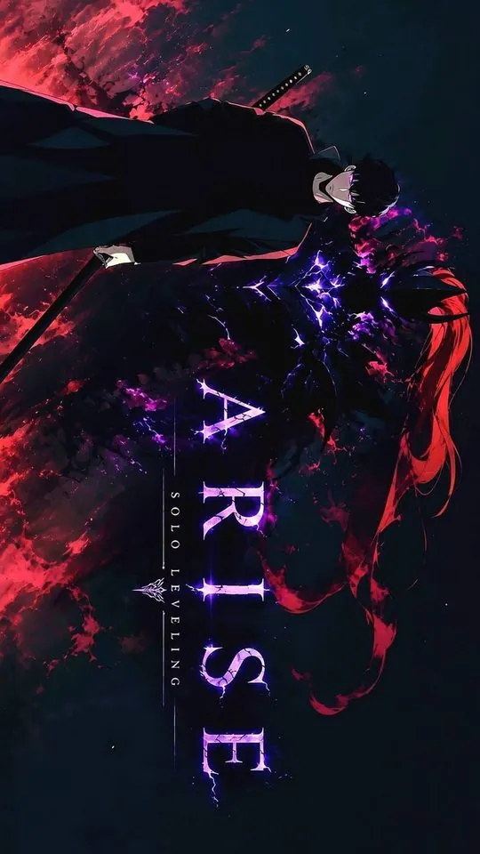
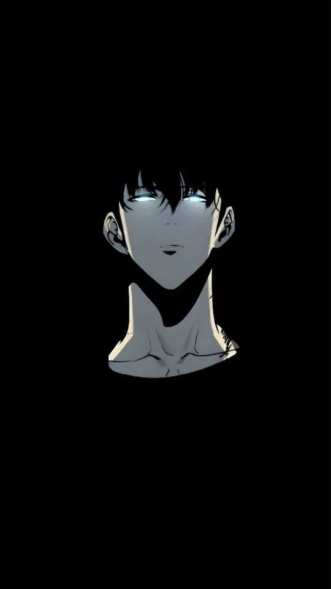
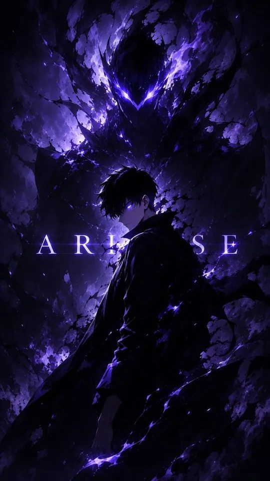
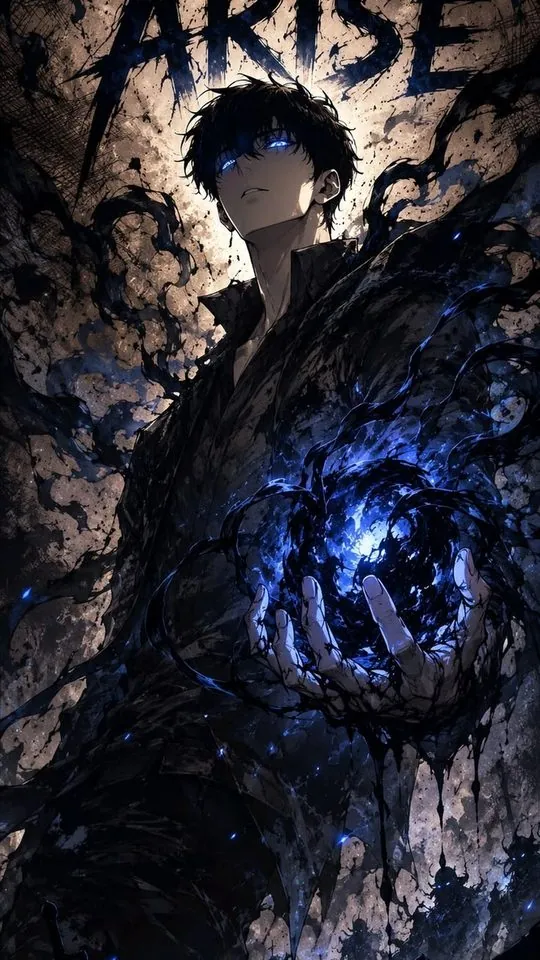

Solo Leveling Wallpapers: Sung Jin-Woo's Best Art, Ranked

Solo Leveling is one of the few series whose art was designed to look best on a screen, which makes it a natural fit for phone wallpapers. This guide follows Sung Jin-Woo's visual progression from weak E-rank hunter to the Shadow Monarch, then looks at the shadows that fight beside him — Igris, Beru and the wider army. Along the way it explains the purple-and-blue palette that defines the series and why its darkest images look especially good on an OLED phone.
Why Solo Leveling art suits a dark phone screen
Most anime key art is painted for a bright background. Solo Leveling is different: a large share of its official art and its webtoon panels are set in near-black dungeons, lit by one cold source — a purple glow, a blue system window, the red of a gate. That means the artwork already has the structure a phone screen wants. There is a black field for the clock and the icons, and one bright figure for the eye to land on. On an OLED display, where true black pixels are switched off rather than lit, the effect is stronger still: the black background merges with the phone's own bezel and the figure appears to float. If you have ever wondered why Solo Leveling wallpapers look so sharp compared with other anime art, this is the reason.

E-rank to Shadow Monarch: the visual progression
Jin-Woo changes more across the series than most protagonists, and his design changes with him. As an E-rank hunter he is drawn slight and ordinary — plain dark hair, a cheap grey tracksuit, no glow, a face that reads as tired rather than powerful. This early version is the most relatable and the easiest to crop, but it is also the least dramatic, so it rarely makes a striking lock screen. As he levels up, the art adds a cold blue aura and sharper shadows around his face. By the time he becomes the Shadow Monarch, the palette has shifted to deep violet and black, his eyes glow, and the signature shadow soldiers gather behind him. For a wallpaper, the Monarch version gives you the strongest image: a dark figure with a single violet glow and a clear, commanding silhouette.

The shadows: Igris, Beru and the army
The shadow soldiers are where Solo Leveling art gets its variety. Igris, the crimson knight, is the most popular single subject after Jin-Woo himself: a red-and-black armoured figure with a cape and a sword, which gives you a second colour to work with alongside the usual purple. His red reads clearly on a dark background and makes an excellent lock screen that does not rely on a face at all. Beru, the ant-formed shadow, is a stranger and more unsettling shape — dark, spiked and insect-like — and works best in a full-body silhouette rather than a close crop. The wider army, with dozens of shadow figures massed behind Jin-Woo, is the best choice if you want a wallpaper with scale, but it needs a careful crop so the army does not turn into visual noise. A few rules help:
- Use one bright shadow as the focal point and let the rest fall into darkness.
- Keep Jin-Woo's violet glow as the single strongest colour on the screen.
- Crop so the tallest figure reaches the upper third and the mass fills the lower half.
- Avoid images where every shadow is lit; a crowd of glowing figures reads as a mess at icon size.
The purple-and-blue palette, and why it matters
Solo Leveling's identity colour is violet, supported by a colder blue for the system windows and a red that appears only for danger and for Igris. That limited palette is a gift for a wallpaper, because you can match the rest of your phone to it. A violet wallpaper sits well with a dark grey icon pack and a muted keyboard; a blue system-window image pairs with cooler white text. The red images are the loudest and are best reserved for a home screen or for a character like Igris, where red is the whole point. If you want the screen to feel calm, stay with violet and blue; if you want it to feel sharp and aggressive, let the red in.

Practical wallpaper choices for different moods
Because the art ranges from quiet to dramatic, it helps to pick by mood rather than by character alone. For a calm lock screen, choose a soft blue system-window image or a distant shot of Jin-Woo with his shadow barely visible. For something commanding, use the Monarch art with the violet glow and the army behind him. For a home screen that stays readable under icons, pick Igris or a close crop of Jin-Woo's face, where the detail is concentrated in the centre and the edges stay dark. For a purely abstract wallpaper, Solo Leveling's glowing gate and system-window art works on its own, with no character at all — often the cleanest option for a busy phone. Whatever you choose, test it against your actual icon layout, because a dark wallpaper with a bright glow can make white app labels hard to read if the glow sits behind them.

Frequently asked questions
Why do Solo Leveling wallpapers look good on AMOLED screens?
Because much of the art is built on near-black backgrounds, and OLED screens produce true black by switching those pixels off rather than lighting them. That makes the dark areas deeper and the glowing figures brighter by comparison, and it also uses less power than a bright wallpaper would.
Which Solo Leveling character makes the best wallpaper?
Sung Jin-Woo in his Shadow Monarch form is the strongest single image, because the violet glow and dark silhouette read instantly. Igris is the best alternative if you want a non-human subject, and the massed shadow army is the best choice if you want a sense of scale.
Is early E-rank Jin-Woo worth using as a wallpaper?
It can work if you like the understated look, but the early art lacks the glow and contrast that make the later images pop. It suits a home screen better than a lock screen, where a stronger silhouette tends to hold up best behind a clock.
How do I crop a wide webtoon panel for a portrait phone?
Find the strongest single figure inside the panel and crop around it, accepting that you will lose the rest. Webtoon panels are often tall already, which helps. If the panel is too wide, keep the head and the brightest glow in the frame and let the surrounding dungeon fade out of the crop.
Related reading
If you like fantasy anime with real political weight, we reviewed As a Reincarnated Aristocrat, I'll Use My Appraisal Skill to Rise in the World season by season: Season 1, Season 2, Season 3 (airing now), or start with the complete S1-S3 guide.